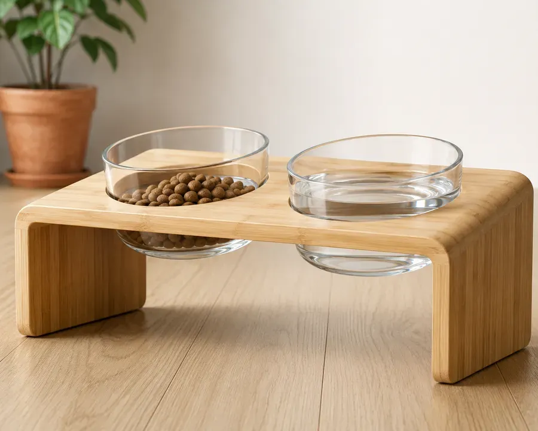
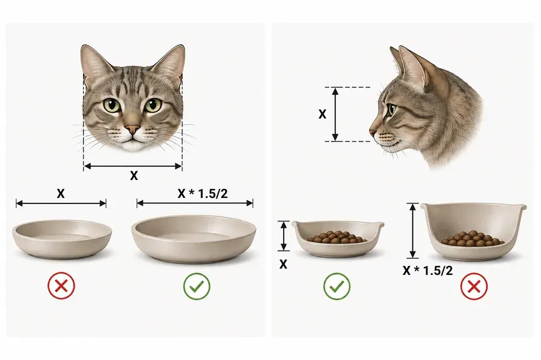

Nourriture et eau
Crée un espace repas idéal pour ton chat, en respectant son confort et ses besoins naturels.
1. Choisir les gamelles
Le matériau compte. Le plastique retient les bactéries et peut provoquer de l'acné féline. Ce qui est recommandé : le verre, la céramique, l'acier inoxydable.
2. L'emplacement idéal
Les chats sont des animaux d'habitude, attachés à leur sécurité. Ne place jamais la nourriture à côté du bac à litière.
- Un coin calme, à l'abri des courants d'air ;
- Loin des appareils bruyants ;
- Une vue sur la pièce pour se sentir en sécurité.
3. La hauteur idéale
Des gamelles sur un support réduisent la tension sur le cou et les articulations, surtout chez les chats âgés. Une gamelle légèrement inclinée à 15 degrés rend la déglutition plus naturelle. Choisis la hauteur en fonction de la taille de ton chat debout.

4Conseil : la taille des gamelles
Conseil
Largeur de la gamelle : le diamètre intérieur doit être au moins 1,5 à 2 fois plus large que le museau du chat (moustaches comprises). Pour la plupart des chats adultes, le diamètre idéal est de 15 à 18 cm ; pour les grandes races (comme le maine coon), 18 à 22 cm. En dessous de 12-13 cm de diamètre, les moustaches du chat touchent trop souvent les bords.
Profondeur de la gamelle : entre 2 et 4 cm est idéal, pour les croquettes comme pour la pâtée. La hauteur du rebord doit représenter environ 1/2 à 3/4 de la hauteur du museau du chat. Des rebords de plus de 5-6 cm ne conviennent qu'à de grandes quantités de nourriture, mais sont moins pratiques au quotidien.

Dans la même rubrique
Les informations de l'application proviennent de sources ouvertes et de l'expérience de propriétaires de chats. Elles ne remplacent pas la consultation ni l'examen par un vétérinaire. Les décisions concernant la santé et les soins de votre animal appartiennent à son propriétaire : en cas de doute, consultez un vétérinaire.
Tout cela est dans l'application Cat First
Articles, check-lists et premiers secours sur votre téléphone, même sans internet.